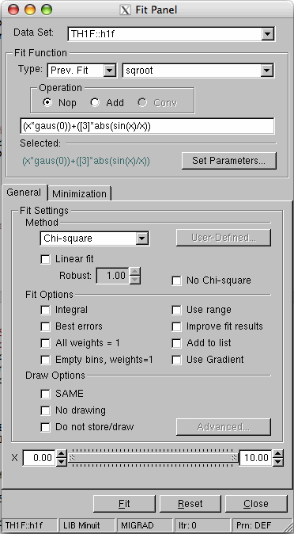

void TGraph::GetPoint(Int_t i, Double_t &x, Double_t &y) const
to
Int_t TGraph::GetPoint(Int_t i, Double_t &x, Double_t &y) const
The function returns -1 in case of an invalid request or the
point number otherwise.
{
TH1D h("h", "h", 10., 0., 1.);
h.SetBinContent(1, 1.);
h.SetBinContent(3, 1.);
h.SetBinContent(10, 1.);
h.SetFillColor(1001);
h.SetFillColor(kOrange-2);
h.SetLineColor(kBlack);
TCanvas canvas("canvas");
frame = canvas.DrawFrame(-1., 0., 2., 2.);
h.Draw("SAME");
}
h2->Draw("COLZ");
gPad->Update();
TPaletteAxis *palette =
(TPaletteAxis*)h2->GetListOfFunctions()->FindObject("palette");
Int_t ci = palette->GetBinColor(20,15);
Then it is possible to retrieve the RGB components in the following way:
TColor *c = gROOT->GetColor(ci);
float x,y,z;
c->GetRGB(x,y,z);
{
TH1D h("h", "h", 10., 0., 1.); h.Fill(.5);
THStack s("s", "s"); s.Add(&h);
TCanvas canvas("canvas");
frame = canvas.DrawFrame(-1., 0., 2., 2.);
frame.SetLabelSize(0.05, "XY");
frame.Draw(); s.Draw("same");
}
